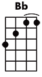
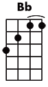
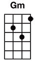
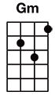
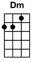
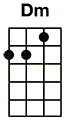

#? üî•Call Me


 

 

 



Call Me chords
Blondie 1980 *
https://en.wikipedia.org/wiki/Call_Me_(Blondie_song)
Capo I
[Dm] [G] [F] [Dm] [F] [C] [2x]
[Dm] Color me your color, baby,
[Bb] color me your car.
[Dm] Color me your color, darling,
[Bb] I know who you are.
[Gm] Come up off your [A] color chart;
[Gm] I know where you're [A] coming from.
Call [Dm] me (call me) on the [F] line,
call me, [Gm] call me any, [Bb] anytime.
Call [Dm] me (call me) I'll [F] arrive,
you can [Gm] call me any [Bb] day or night.
Call [Dm] me!
[Dm] [G] [F] [Dm] [F] [C]
[Dm] Cover me with kisses, baby,
[Bb] cover me with love.
[Dm] Roll me in designer sheets,
[Bb] I'll never get enough.
[Gm] Emotions come, I [A] don't know why;
[Gm] cover up love's [A] alibi.
Call [Dm] me (call me) on the [F] line,
call me, [Gm] call me any, [Bb] anytime.
Call [Dm] me (call me) I'll [F] arrive,
when you're [Gm] ready we can [Bb] share the wine.
Call [Dm] me.
[Dm] [G] [F] [Em] [A] [G]
[Em] Ooh, he speaks the [Bm] languages of love.
[Em] Ooh, amore, [Bm] chiamami (chiamami).
[F] Ooh, appelle-moi, [C] mon cheri (appelle-moi).
[Dm] Anytime, anyplace, anywhere, [Bb] anyway!
[Gm] Anytime, anyplace, anywhere, any day, [A] anyway!
[Em] [Bm] [Em] [Bm] [F] [C] [Dm] [Bb] [Gm] [A]
Call [Dm] me (call me) in my [F] life,
call me, [Gm] call me any, [Bb] anytime.
Call [Dm] me (call me) I'll [F] arrive,
call me, [Gm] call me for some [Bb] overtime.
Call [Dm] me (call me) in my [F] life,
call me, [Gm] call me in a [Bb] sweet design.
Call [Dm] me, (call me) call [F] me for your [Gm] lover's lover's [Bb] alibi.
Call [Dm] me (call me) [F] inner line,
call me, [Gm] call me any [Bb] anytime.
Call [Dm] me.
[F] Oh, call [Gm] me, ooh [Bb] ooh ah.